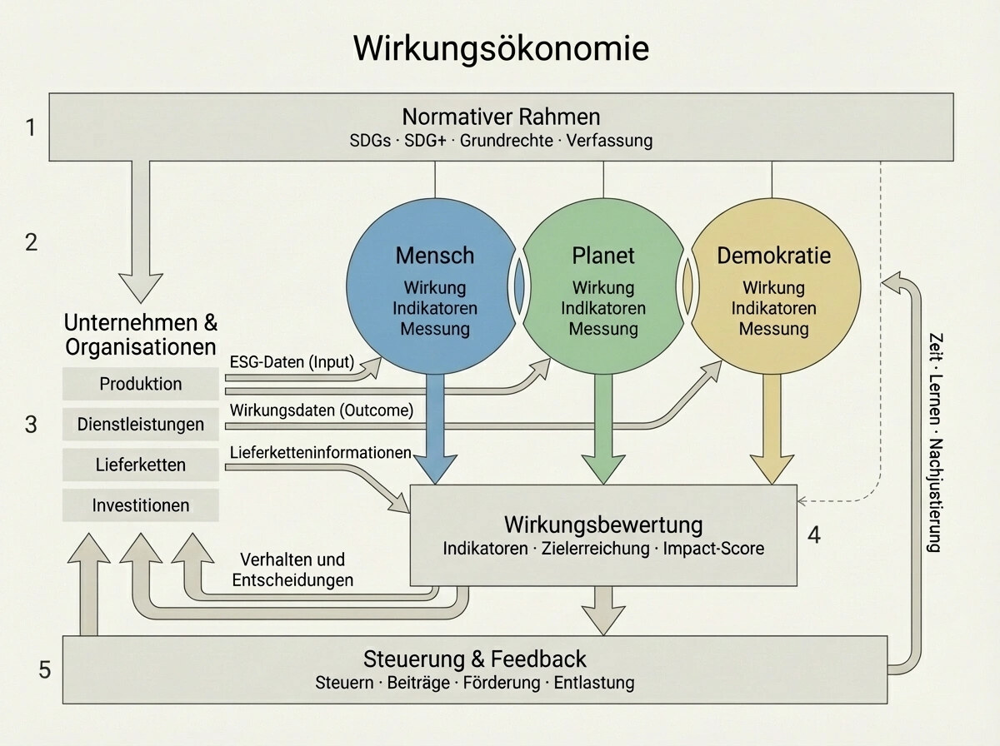

Unsere Wirtschaft wird bis heute primär über Kapital, Gewinn und Wachstum gesteuert. Diese Größen sind einfach zu messen - aber sie sagen wenig darüber aus, ob unser wirtschaftliches Handeln das Leben von Menschen verbessert, den Planeten schützt oder unsere Demokratie stabilisiert.
Genau hier liegt ein zentrales Problem unserer Zeit: Wir steuern mit Kennzahlen, die blind sind für ihre eigenen Folgen.
Die Wirkungsökonomie setzt deshalb einen anderen Maßstab. Nicht Kapital, sondern Wirkung wird zur zentralen Steuerungsgröße.
Die folgende Grafik zeigt, wie dieses Modell funktioniert. Im Folgenden erkläre ich es Schritt für Schritt.

1. Der normative Rahmen: Woran wir Wirkung messen
Jede Steuerung braucht einen Maßstab. In der Wirkungsökonomie ist dieser Maßstab normativ - nicht politisch beliebig, sondern gesellschaftlich legitimiert.
Dazu gehören:
die Sustainable Development Goals (SDGs),
eine erweiterte Wirkungslogik (SDG+),
Grundrechte,
und die Verfassung.
Dieser normative Rahmen steuert nicht operativ. Er greift nicht direkt in Märkte oder Entscheidungen ein. Er definiert vielmehr, was als gute oder schlechte Wirkung gilt.
Damit wird Wirkung messbar, vergleichbar und überprüfbar - ohne ideologische Deutungshoheit.
2. Wirkung auf Mensch, Planet und Demokratie
Wirtschaftliche Aktivität hat immer Wirkung. Die Wirkungsökonomie macht diese Wirkung systematisch sichtbar - entlang drei gleichwertiger Dimensionen:
Mensch: Lebensqualität, Gesundheit, soziale Sicherheit, Teilhabe
Planet: Klima, Ressourcen, Biodiversität, ökologische Belastungsgrenzen
Demokratie: Vertrauen, Legitimation, Stabilität, gesellschaftlicher Zusammenhalt
Alle drei Dimensionen sind gleichrangig. Keine kann dauerhaft funktionieren, wenn die anderen geschädigt werden.
Wichtig ist: Diese Ebenen sind keine Moralfolie, sondern Messräume. Hier wird Wirkung erfasst - nicht bewertet im Sinne von „gut“ oder „böse“, sondern gemessen anhand klarer Indikatoren.
3. Unternehmen liefern Daten - nicht Deutungen
Unternehmen und Organisationen bleiben zentrale Akteure der Wirtschaft. In der Wirkungsökonomie ändert sich nicht ihre Rolle - sondern die Logik, nach der ihre Wirkung sichtbar wird.
Unternehmen liefern Daten aus:
Produktion
Dienstleistungen
Lieferketten
Investitionen
Dabei ist eine klare Unterscheidung entscheidend:
ESG-Daten sind Input: sie beschreiben Prozesse, Strukturen und Maßnahmen.
Wirkungsdaten sind Outcome: sie zeigen, was tatsächlich bei Mensch, Planet und Demokratie ankommt.
Unternehmen liefern keine Bewertungen, sondern überprüfbare Informationen. Die Deutung entsteht erst im nächsten Schritt - systematisch und transparent.
4. Wirkungsbewertung: Wenn Wirkung steuerungsrelevant wird
Erst durch Bewertung wird Wirkung handlungsrelevant.
In der Wirkungsbewertung werden:
Indikatoren zusammengeführt,
Zielerreichung gemessen,
Wirkungsprofile vergleichbar gemacht,
und Wirkungsscores gebildet.
Der normative Rahmen wirkt hier indirekt, über die Definition der Bewertungsmaßstäbe. Nicht Politik entscheidet im Einzelfall, sondern ein transparentes Wirkungsraster.
So entsteht Orientierung:
für Politik,
für Unternehmen,
für Finanzmärkte,
und für gesellschaftliche Entscheidungen.
5. Steuerung über Rückkopplung statt Verbote
Die Wirkungsökonomie steuert nicht über Verbote oder moralischen Druck. Sie steuert über Rückkopplung.
Auf Basis der Wirkungsbewertung werden:
Steuern,
Beiträge,
Förderungen,
Entlastungen
so angepasst, dass sie Verhalten und Entscheidungen beeinflussen.
Wichtig: Steuerung wirkt nicht direkt auf Wirkung, sondern auf Entscheidungen. Diese Entscheidungen erzeugen neue Wirkung - die wiederum gemessen wird.
So entsteht ein lernendes System: Wirkung → Steuerung → Verhalten → neue Wirkung.
Zeit, Lernen und Nachjustierung sind kein Fehler im System, sondern sein Kern.
Warum die Wirkungsökonomie mehr ist als ESG oder Nachhaltigkeit
Die Wirkungsökonomie ist:
kein ESG-Reporting-Rahmen,
kein Moralmodell,
kein parteipolitisches Programm.
Sie ist ein Steuerungsmodell, das Wirkung sichtbar, vergleichbar und wirksam macht - auf Basis gemeinsamer normativer Ziele.
Kapital verschwindet dabei nicht. Es verliert lediglich seine Rolle als alleinige Steuerungsgröße.